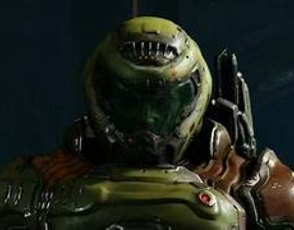

WHAT IS DOOM FRANCHISE?
Doom (stylized as DOOM) is an American media franchise created by
John Carmack, John Romero, Adrian Carmack, Kevin Cloud, and Tom
Hall. The series usually focuses on the exploits of an unnamed space
marine (often referred to as Doomguy or Doom Slayer) operating under
the auspices of the Union Aerospace Corporation (UAC), who fights
hordes of demons and the undead to save Earth from an apocalyptic
invasion

TheDoomvideo games consist of first-person shooters in which the
player controls an unnamed space marine commonly referred to as
Doomguy; in the 2016 series, the protagonist is called the "Doom
Slayer" or just "Slayer" in later entries. The player battles the
forces of Hell, consisting of demons and the undead. The games are
usually set within sprawling bases on Mars or its moons, while some
parts occur in Hell. The classic series had only a minimal focus on
the narrative, much of which was in the manuals rather than the
games.More recent titles, notably the 2016 series, would feature a
heavier focus on narrative.
The original Doom is considered one of the first pioneering
first-person shooter games, introducing to IBM-compatible computers
features such as 3D graphics, third-dimension spatiality, networked
multiplayer gameplay, and support for player-created modifications
with the Doom WAD format. Over ten million copies of games in the
Doom series have been sold; the series has spawned numerous sequels.